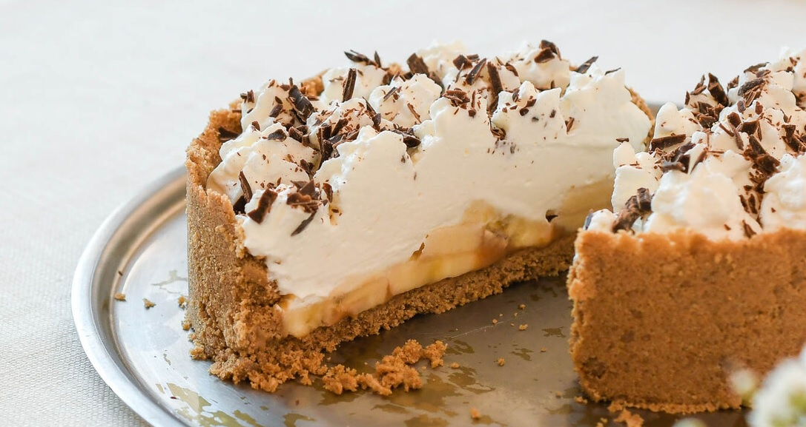

Card title
Some quick example text to build on the card title and make up the bulk of the card's content.
Go somewhere
La torta toffee es uno de los postres por excelencia para los festejos y celebraciones o simplemente para darle una cuota de sabor a una tarde. Un pastel con un singular sabor al dulce nacional que queda bien luego de cualquier plato. Ahora, uno de los jurados de “MasterChef Celebrity” reveló su receta para este exquisito manjar de dulce de leche.
Para el relleno se necesitarán 300 gramos de caramelos de dulce de leche y 100 mililitros de crema de leche. En lo que respecta a la masa, la misma se compone de una taza y un cuarto de harina 0000, 3 cucharadas de azúcar impalpable, un tercio de taza de manteca, una pizca de sal y 3 cucharadas de agua fría. Por último, el ganache se puede preparar con 150 gramos de chocolate y 150 mililitros de crema de leche.
El paso a paso
Primero se mezcla la harina, el azúcar y un arenado con la manteca en un recipiente para que quede una masa suave. Se enmanteca un molde de casi 26 centímetros y se estira la masa acomodándola al recipiente para pincharla con un tenedor.
Se debe cocinar a horno mínimo entre 25 y 30 minutos para luego sacarla y esperar a que se enfríe bien. Se le coloca el dulce de leche hasta cubrir toda la base y se derrite el chocolate con la crema de leche para bañarla con esta mezcla. Se coloca en la heladera cerca de 3 horas y ya está terminada la torta toffee